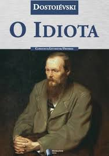
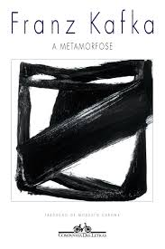
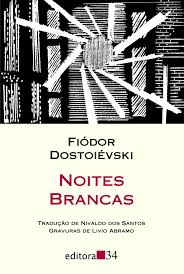
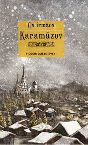
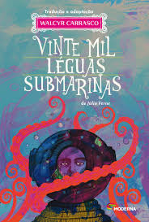
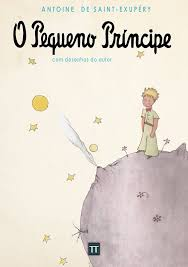

O Idiota
Romance de Fiódor Dostoiévski que explora a inocência e a bondade em um mundo corrompido.
Mais Informações

A Metamorfose
Novela de Franz Kafka sobre um homem que se transforma em um inseto gigante.
Mais Informações

Noites Brancas
Novela curta de Dostoiévski que retrata um romance efêmero nas noites de São Petersburgo.
Mais Informações

O Declínio do Homem
Obra que discute a evolução humana e os fatores que influenciam seu desenvolvimento.
Mais Informações

Dom Casmurro
Clássico de Machado de Assis que aborda o ciúme e a dúvida no relacionamento de Bentinho e Capitu.
Mais Informações

Irmão Kasparov
Ficção hipotética sobre um personagem inspirado no lendário enxadrista Garry Kasparov.
Mais Informações
Utopia
Livro de Thomas More que descreve uma sociedade ideal e suas estruturas políticas e sociais.
Mais Informações
O Diário de Anne Frank
Relato real de uma adolescente judia que se escondeu dos nazistas durante a Segunda Guerra Mundial.
Mais Informações

Vinte Mil Léguas Submarinas
Romance de Júlio Verne que narra as aventuras do Capitão Nemo a bordo do submarino Nautilus.
Mais Informações

O Pequeno Príncipe
Livro de Antoine de Saint-Exupéry que aborda temas como amor, amizade e sentido da vida.
Mais Informações